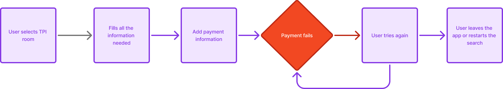

Defining the constraint boundary before designing anything
Before touching the interface, I needed to establish what we could and could not change. TPI payment limitations were contractual and technical, set by the third-party providers. We could not fix the root cause. That constraint was important to surface early, because it ruled out an entire category of solutions and focused the team on a single direction: design a recovery flow that works entirely within the failure state.
I also identified an early strategic risk. Presenting a Booking.com native room as the alternative immediately after a TPI failure could damage future TPI conversion if users started associating TPI with unreliability. The design had to frame the alternative as a helpful option, not as a judgment on TPI. That framing decision shaped every iteration that followed.
I used Jobs to Be Done to anchor the team: when my payment fails, I want a clear and trustworthy alternative so I do not have to start over and risk losing my booking. That single sentence resolved several design disagreements before they became debates.
I mapped the current flow against the proposed recovery flow to get cross-functional agreement before designing. The before state was a linear dead end. The after state introduced a branch at the failure point: offer a comparable Booking.com room with pay-at-property.


Left: the original flow. A linear path with no recovery. Right: the proposed flow. The failure becomes a decision point with two clear paths forward.
With the flow direction agreed, I moved into prototyping. I used UserTesting.com to test each iteration with real users, keeping cycles short. One pattern was consistent across all sessions: users in a payment failure state were already frustrated. Any added cognitive load made things significantly worse.